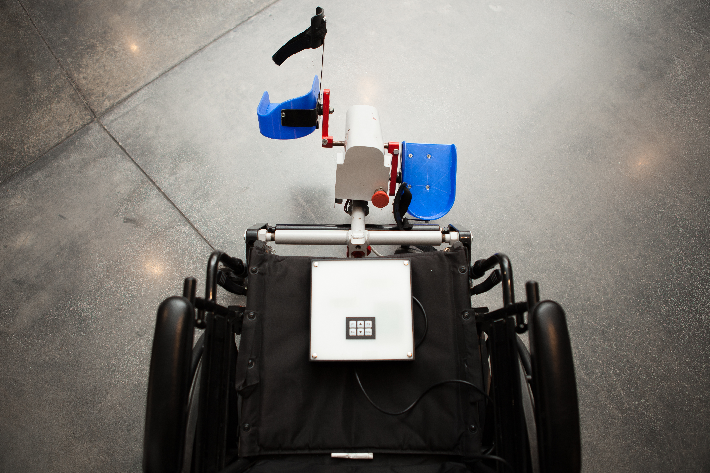

Wheelchair-first fit
Designed around common manual wheelchair sizes with a compact front-mounted architecture.
LEGMAKER · LOWER-LIMB MOTION PLATFORM
A patented, wheelchair-integrated lower-limb exercise platform under development to bring assisted motion, active exercise, adjustable resistance and connected session information into a compact system designed for everyday use.
BUILT AROUND THE WHEELCHAIR
LegMaker is being developed as a patented, compact motor-assisted pedal unit designed to attach to 16-, 18- and 20-inch manual wheelchairs, with a focus on lower-limb movement, configurable sessions and connected software.
Designed around common manual wheelchair sizes with a compact front-mounted architecture.
Seated leg exercise with configurable cadence, resistance and session duration.
Planned patient and provider software for RPM, duration, power, resistance and other session metrics.
DESIGN PREMISE
LegMaker is designed around a seated wheelchair setup rather than a separate exercise station.
The product direction brings passive, active and resistance-based exercise into one motion architecture.
Connected software is planned to organize device settings and session information in a clear experience.
WHY LEGMAKER
Exercise technology should adapt to the person’s existing mobility setup — not ask the person to adapt to the machine.
THREE MODES
The system drives the pedal cycle to provide continuous lower-limb movement.
Motor-assisted cycling where the system provides the movement.
User-driven movement with session sensing and tracking.
Adjustable resistance with up to 15 planned levels for progressive training.
LEGMAKER PROTOTYPE
Real development hardware showing the LegMaker attachment, wheelchair integration and current prototype configuration.



Prototype shown for development illustration. Product configuration and specifications may change.
A SMALLER FOOTPRINT
LegMaker’s product direction centers the wheelchair itself, with the motion unit positioned around the user’s existing seated setup.
PHYSICAL AI + CONTROL
LegMaker’s architecture is being developed around closed-loop sensing, responsive resistance control and connected software for a more measurable exercise experience.
FOR CARE TEAMS
LegMaker’s connected product direction is designed to bring device setup, exercise configuration and session information into one understandable workflow.
Cadence, resistance, duration, warm-up and cool-down settings organized around the session.
Planned tracking for RPM, time, resistance, power and total revolutions.
CONNECTED BY DESIGN
The product roadmap connects physical movement with readable session data — designed to make configuration and review simpler for users and care teams.
RESEARCH + DEVELOPMENT
Rehabwheel is developing LegMaker with structured usability, engineering and clinical evaluation in mind. The platform is intended to support lower-limb exercise workflows and longitudinal session data.
INTELLECTUAL PROPERTY
WHO WE ARE BUILDING FOR
The current product strategy centers wheelchair users and older adults with mobility limitations, alongside rehabilitation clinics, home-care providers, assisted-living settings, VA hospitals and caregivers.
A wheelchair-integrated approach intended to make lower-limb exercise more accessible within the user’s existing mobility setup.
A developing platform for structured sessions, product evaluation and connected exercise information.
A product direction designed around aging in place, repeatable sessions and a future caregiver-facing digital experience.
PRODUCT DIRECTION
THE EXPERIENCE
Bring LegMaker into the wheelchair setup.
Select mode, cadence, resistance and duration.
Run the lower-limb exercise session.
Use connected metrics to review the session.
TRACTION
Rehabwheel’s current company materials report two granted patents in the U.S. and China, clinical-study discussions underway, and preparation for usability and safety validation work.
“Build around the wheelchair. Measure the session. Keep the experience human.”
Rehabwheel product principleTEAM
Founder & CEO
CTO
Chief Medical Officer
Chief Research Officer
DEVELOPMENT TRANSPARENCY
LegMaker is under development. Current website visuals and interface examples communicate product direction.
Software, connectivity and data capabilities described on this site are part of the development roadmap unless stated otherwise.
Nothing on this site should be read as a representation of regulatory clearance, clinical efficacy or commercial availability.
QUESTIONS
A lower-limb motion platform under development by Rehabwheel, designed around a seated wheelchair setup.
The product direction includes passive, active and resistance-based modes, with up to 15 planned resistance levels.
The product is under development. Availability, specifications and regulatory status may change.
Yes. Rehabwheel welcomes conversations about research, clinical evaluation, engineering and strategic partnerships.
BUILT FOR COLLABORATION
Discuss product evaluation, session design and care-team experience.
Clinical collaboration →Explore structured evaluation and research collaboration around the developing platform.
Research collaboration →Connect on engineering, manufacturing, distribution and strategic development.
Partnership conversation →THE PLATFORM
A product direction centered on the wheelchair and seated lower-limb movement.
Passive, active and resistance-based modes within one product architecture.
A roadmap for readable metrics and connected patient/provider experiences.
REHABWHEEL
For research, clinical, partnership and product-development conversations.
LegMaker is under development. Descriptions of planned functionality are product-development targets and are not representations of regulatory clearance, clinical efficacy, or commercial availability.